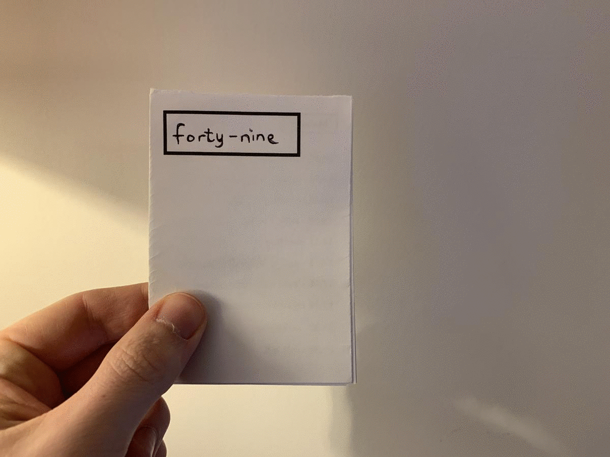

archive stuff, and keep track of things.
Back to Blog | Gary-Martin
How I Spend My Time |
|---|
|
In response to some of the time management points that Austin Kleon mentioned in his books, I've decided to calculate how I spend my hours in a week and draw up a weekly schedule and attempt to follow it. I've made a template for a zine in Keynote which I can adapt if I need to, incase there are any major alterations to my schedule. And then I print the zine off on Sunday each week ready for the next week. I can then carry this and refer to it as an informal but accurate schedule for myself. It also means I am able to remove an action I would normally use my phone for, which I'm trying to do if I can find a more convenient and practical alternative. I give the zine a title, which is the month number out of the 52 in a year. I also use coloured stickers to break up my time into themes/activities so I can track how much time I've spent doing certain things. There is a colour coded key of activities in the back of my notebook.  |